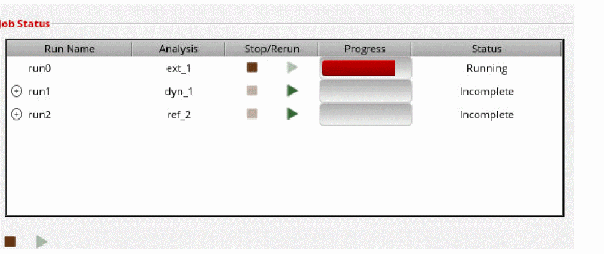
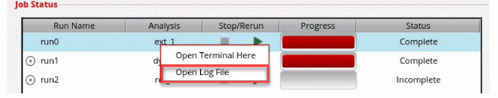
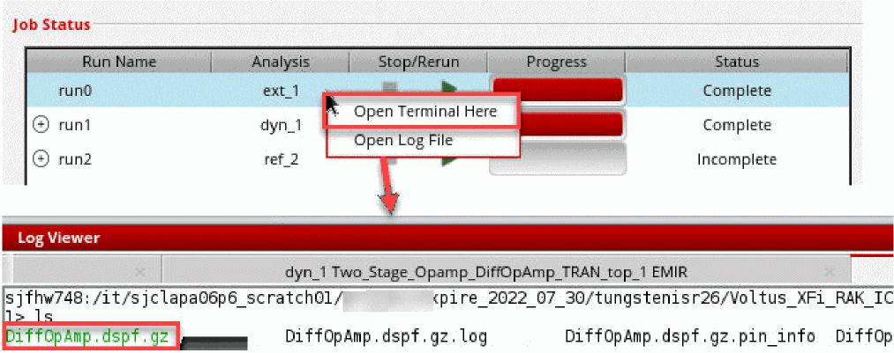

Generating a DSPF
- Click the Run tab from the task pane.
-
In the Job Status section, click the Start Run (
) button next to the extraction run (ext_1).
The extraction log appears at the lower section of the Voltus-XFi window. After the extraction run is complete, the log window displays the message “Finished Extraction”. The status changes from Running to Complete.
You can click the Stop Run ( ) button to stop extraction. -
You can check the log file for the extraction run from within the Voltus-XFi interface by right-clicking the extraction run name and selecting the Open Log File option.
 -
You can open the Quantus output directory from within the Voltus-XFi interface by right-clicking the extraction run name and selecting the Open Terminal Here option.

Related Topics
- Voltus-XFi EM-IR GUI – Run Tab
- Voltus-XFi EM-IR Form Description
- Running EM-IR Analysis
- Running DSPF Linter on a DSPF Netlist File
Return to top